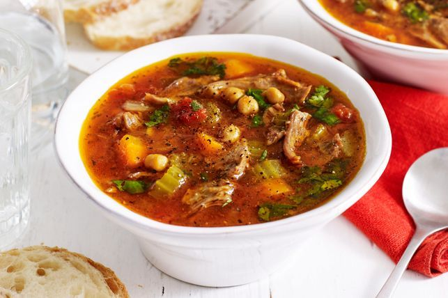
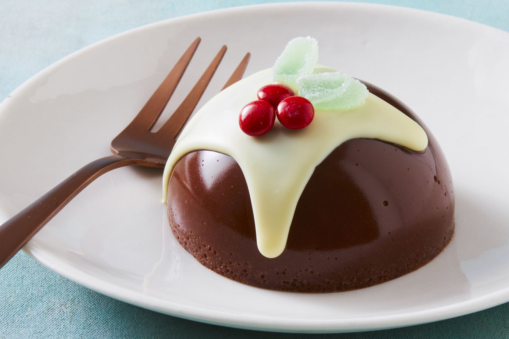

Explore our recipe collection
SoupSlow cooked lamb shanks melt off the bone in this fabulous Moroccan-style. Nothing beats a healthy, homemade vegetable soup. This version features quinoa, tomato and peas. View more details |
Kebab
Looking for a fuss-free dinner on those busy weeknights? Look no further, these sticky kebabs with gyros salad is a delicious, light dinner for the whole family. View more details |
PuddingThe jellies themselves are made with only dark chocolate, sugar, water and gelatine, so they’re easy to put together. Don’t be fooled by how fancy these treats look. It's as simple as bringing the sugar and water to the boil, then stirring through the chocolate and gelatine until melted (kind of similar to our 1-ingredient chocolate mousse recipe, with the addition of gelatine). View more details |